Wireshark Network Analysis 2nd Ed · Laura Chappell
You can't analyze what you didn't capture.
Master interface selection, capture options, and tap strategies — the foundation of all Wireshark analysis.
No questions yet.
No notes yet.
💡THINK FIRST · INTERFACE SELECTION
If you pick the wrong network interface, you'll capture nothing useful. How do you identify which interface carries the traffic you need, and why might promiscuous mode alone not be enough on a switched network?
HINT
Think about what OSI layer capturing happens at. Consider the difference between a hub and a switch.
MODEL ANSWER
Capture happens at Layer 2 (data link). Pick the interface whose IP address matches the network segment you want. Promiscuous mode tells the NIC to accept all frames, not just those addressed to your MAC — but on a switch, frames are forwarded only to the destination port, so you still only see your own traffic, broadcast, and multicast. To capture other hosts' traffic on a switch, you need a SPAN port, network tap, or hub.
Network Interface Selection
The Wireshark Welcome Screen lists all available interfaces with sparkline traffic graphs. Pick the interface carrying the traffic you want to analyze.
Interface Types
Ethernet / Wi-Fi — physical adapters for local network traffic
Loopback (lo) — traffic between processes on the same machine
Virtual / Tunnel — VPN, Docker, VMware adapters
Any (Linux) — captures on all interfaces simultaneously
Promiscuous Mode
Enabled by default — the NIC passes all frames to the OS, not just those addressed to your MAC. Essential on a hub or SPAN port. On a switch, you still only see frames addressed to your MAC plus broadcasts and multicasts.
WIRELESS NOTEOn Wi-Fi, promiscuous mode captures traffic from your own AP association only. To capture all 802.11 frames (management, control, data from all stations), you need monitor mode — covered in Chapter 26.
🧠
MENTAL NOTE
Capture = Layer 2. Promiscuous mode = all frames on the segment (hub/SPAN only). On a switch: you see your own traffic + broadcast + multicast. Four ways to capture others' traffic: SPAN port, network tap, hub, or ARP poisoning (lab only).
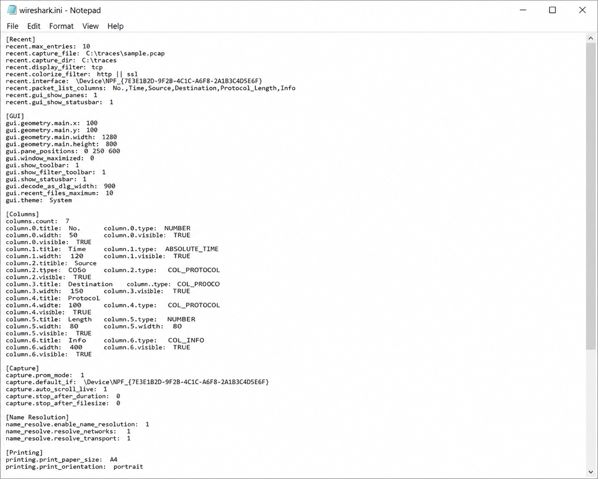
📷Figure 62 — open trace file to view
Figure 62. A sample.ini file is available in portableapps\wiresharkportable\other\wiresharkportablesource
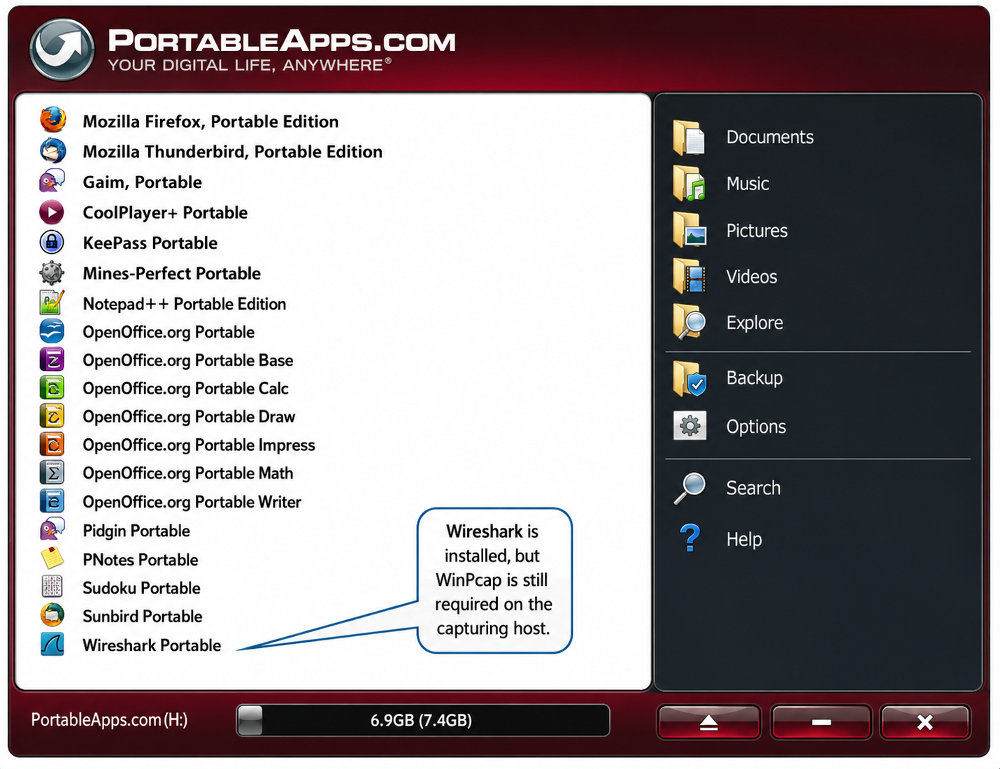
📷Figure 63 — open trace file to view
Figure 63. shows the PortableApps menu—note that Portable Wireshark has been added to the menu. You do not need to install Wireshark inside the PortableApps menu system; Portable Wireshark can be run a
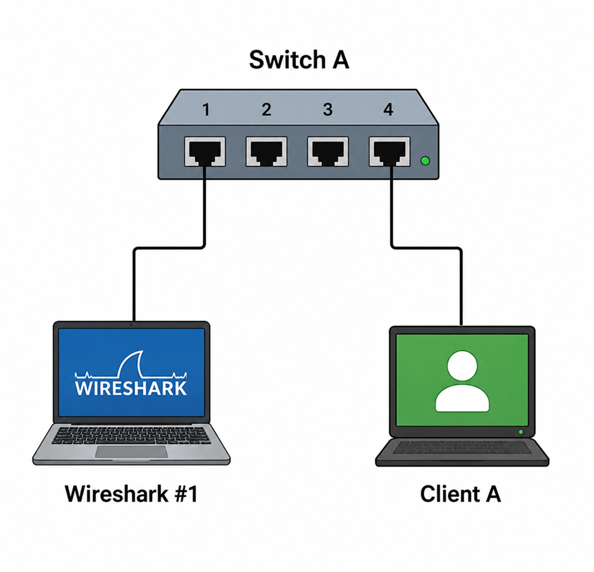
📷Figure 70 — open trace file to view
Figure 70. Port 4 traffic is spanned to port 1
📷Figure 74 — open trace file to view
Figure 74. The AirPcap adapter was designed for WLAN capture
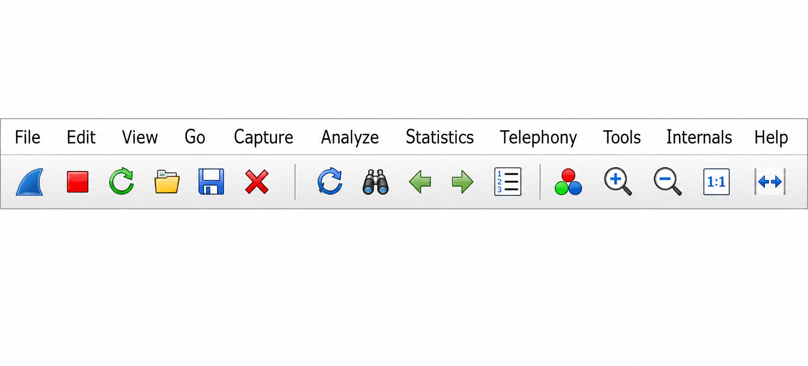
📷Figure 76 — open trace file to view
Figure 76. The Interface Details window Capture Traffic Remotely There may be times when you want to capture traffic at a remote location, but analyze that traffic locally.
Ask a Question
Add a Note
💡THINK FIRST · CAPTURE OPTIONS
The Capture Options dialog (Ctrl+K) has many settings. Which three settings are most critical to configure for a long-running unattended capture, and why?
HINT
Think about file size, data loss prevention, and what happens when disk fills up.
MODEL ANSWER
(1) Ring buffer: set file size (e.g. 50 MB) and file count (e.g. 10) to create a rolling 500 MB window — old files overwritten when full. (2) Output file path: required for ring buffer to work; without it, everything stays in RAM and gets lost if Wireshark crashes. (3) Capture filter: reduce volume on busy links to prevent dropped packets. Snap length can be reduced to 128 bytes to capture headers only if payload analysis isn't needed.
Capture Options Dialog
Open with Capture → Options (Ctrl+K). Three tabs:
Input Tab
Interface — select one or more interfaces
Promiscuous mode — on by default
Monitor mode — Wi-Fi 802.11 raw frames
Capture filter — BPF expression; reduces volume at the kernel
Snap length — default 262144 (full packet); reduce to 128 for header-only capture
Buffer size — kernel ring buffer in MB; increase to prevent drops on fast links
Output Tab
File path — required for ring buffer and auto-save
Ring buffer — rotate files every N MB or N seconds; limit to N files
Format — pcapng (default, supports metadata) or pcap (legacy compatibility)
Options Tab
Stop capture after — N packets / N MB / N seconds
Update list while capturing — disable for high-speed captures to reduce CPU
RING BUFFERFor overnight unattended capture: file size = 100 MB, files = 50 → 5 GB rolling window. Wireshark overwrites the oldest file when all 50 are full. You always have the last 5 GB of traffic when the problem appears.
🧠
MENTAL NOTE
Ring buffer = file size × file count = rolling storage window. pcapng format preserves metadata, interface names, packet comments. Capture filter runs in kernel — reduces volume before Wireshark sees the data. Snap length = max bytes per packet (reduce for header-only capture).
📷Figure 75 — open trace file to view
Figure 75. The Interfaces List shows traffic activity without capturing traffic
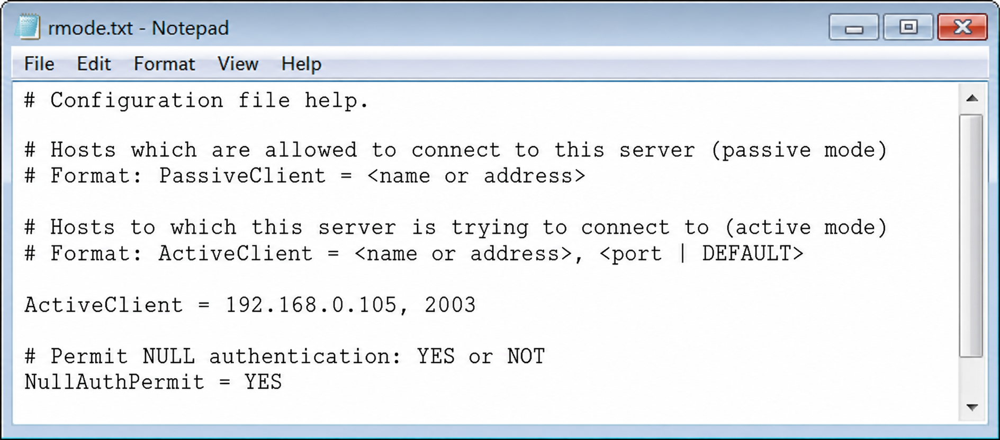
parameter to automatically save configurations to a file Automatically Save Packets to One or More Files When you need to capture a large amount of traffic, consider" onerror="this.style.display='none';this.nextElementSibling.style.display='flex'">
📷Figure 79 — open trace file to view
Figure 79. Use the -s parameter to automatically save configurations to a file Automatically Save Packets to One or More Files When you need to capture a large amount of traffic, consider
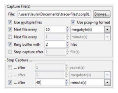
📷Figure 80 — open trace file to view
Figure 80. Capture Options for file sets and stop criteria
Ask a Question
Add a Note
💡THINK FIRST · LIVE CAPTURE CONTROLS
During a high-rate live capture you notice 'Dropped: 12' in the status bar. What does this mean and what are your options to fix it without stopping the capture?
HINT
Drops occur between the wire and Wireshark's buffer. What can you change without restarting?
MODEL ANSWER
Dropped packets mean the OS capture buffer overflowed — you're missing traffic and your analysis is incomplete. Options without stopping: (1) minimize the Wireshark window to free CPU from rendering; (2) if 'Update list while capturing' is on, you can't turn it off mid-capture, but pausing scroll by clicking a packet helps. Long-term fix requires a restart: increase buffer size in Capture Options, disable real-time update, or use dumpcap for headless capture. A non-zero drop count permanently invalidates completeness claims.
Live Capture Controls
During a live capture, the toolbar shows:
Blue shark fin — start new capture (stops current)
Red square — stop capture
Green arrow — restart (clears current capture)
Status Bar
Bottom of window shows: Packets: N · Displayed: M · Dropped: X. Any non-zero Dropped count means you have an incomplete trace.
Autoscroll
The packet list autoscrolls during capture. Click any packet to pause scrolling and examine it — capture continues. Press Ctrl+End to jump back to the latest packet and resume autoscroll.
DROPPED PACKETSDropped: >0 means packets were discarded before Wireshark could save them. You may be missing retransmissions, the SYN that started a connection, or DHCP exchanges. Fix: increase buffer size, disable real-time display update, or use dumpcap for lean headless capture.
🧠
MENTAL NOTE
Non-zero Dropped count = incomplete trace. Options: increase kernel buffer size (Capture Options), disable real-time packet list update, use dumpcap instead of full Wireshark GUI. Click a packet to pause autoscroll; Ctrl+End to resume.
📷Figure 65 — open trace file to view
Figure 65. A Net Optics 10/100/1000BaseT Non-aggregating tap
📷Figure 71 — open trace file to view
Figure 71. Wireshark decodes VLAN fields if the card and driver pass them up
Ask a Question
Add a Note
💡THINK FIRST · CAPTURE TECHNIQUES
You're on a switched network. List four ways to capture other hosts' traffic and give one limitation of each.
HINT
Think about what layer each approach operates at and what infrastructure access it requires.
MODEL ANSWER
(1) SPAN/mirror port — switch sends copies to your port; needs switch admin access, may not capture all errors. (2) Network tap — hardware inserted inline; most accurate, needs physical access, usually two capture interfaces. (3) Hub — replace switch with hub; simple but creates collisions, limited to 100 Mbps. (4) ARP poisoning (MITM) — software routes traffic through your machine; risky in production, requires authorization. Best practice for forensics: use a hardware tap — it's passive and captures all frame errors.
Capture Techniques and Best Practices
Tap Strategies for Switched Networks
SPAN / Mirror Port — switch copies source port(s) to your monitoring port. No traffic impact. Needs switch admin access. May strip FCS errors.
Network Tap — passive hardware device inserted between two devices. Full-duplex, all errors captured. Needs physical access; two capture interfaces needed.
Hub — replace a switch segment with a hub. All traffic broadcast to all ports. Creates collisions; limited to 10/100 Mbps.
ARP Poisoning (MITM) — redirects traffic through capture machine. Lab use only; requires authorization.
Save as pcapng to preserve comments, interface metadata, timestamps
Use pcap for compatibility with older tools (Snort, older tcpdump)
Split large files with editcap before sharing
BEST PRACTICEBefore capturing in production: get written authorization, confirm SPAN bandwidth won't exceed limits, plan retention and cleanup. After capturing: add a packet comment with time range, interfaces, and analyst name (pcapng preserves these).
🧠
MENTAL NOTE
Network tap = best for forensic-quality captures (passive, full-duplex, all errors). SPAN port = best for ongoing monitoring (requires switch access). Hub = rare today. ARP poisoning = lab only. pcapng preserves all metadata; use it unless tool compatibility requires pcap.
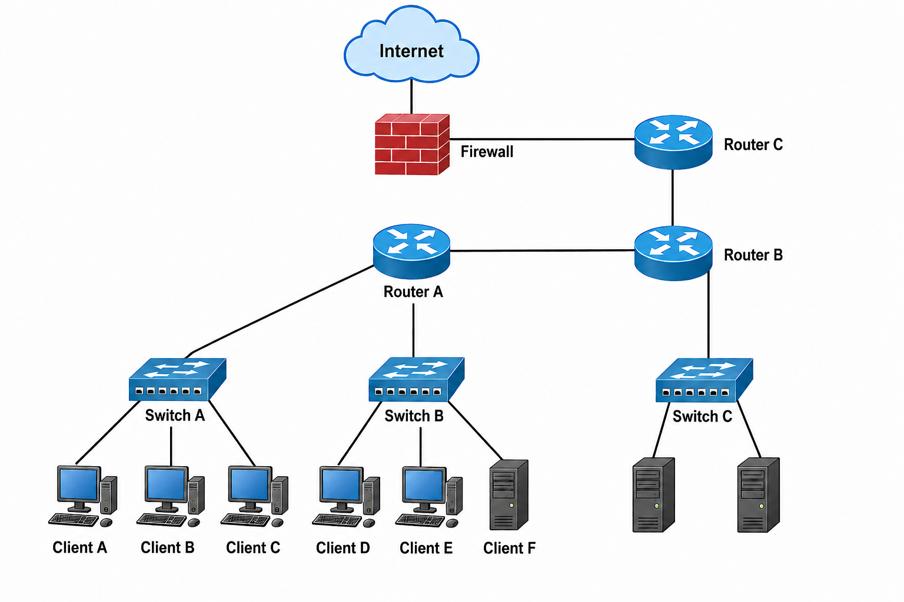
📷Figure 61 — open trace file to view
Figure 61. Basic network diagram—consider the user complaints when determining where to place the analyzer.
📷Figure 64 — open trace file to view
Figure 64. Test your hubs before using them to monitor half-duplex traffic Use a Test Access Port (TAP) on Full-Duplex Networks Network taps can be used on half and full-duplex networks to listen in o
📷Figure 66 — open trace file to view
Figure 66. Setting up a non-aggregating tap and two Wireshark systems
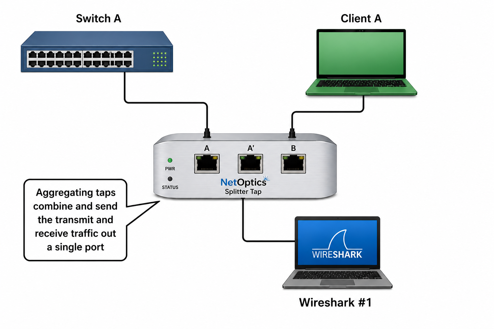
📷Figure 67 — open trace file to view
Figure 67. Net Optics Gigabit Aggregating Fiber Tap (www.netoptics.com)
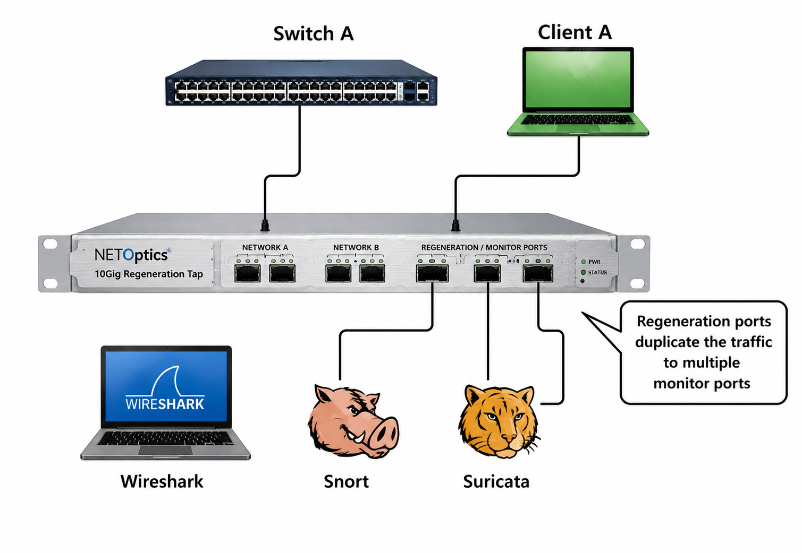
📷Figure 68 — open trace file to view
Figure 68. shows a regenerating tap with fiber ports. The first 8 ports on the left are regeneration ports. The two ports on the right are the inline ports. If you were using this tap to monitor traffi
📷Figure 69 — open trace file to view
Figure 69. shows a link aggregation tap configured to monitor numerous servers. Notice that this link aggregation tap also includes multiple regeneration ports.
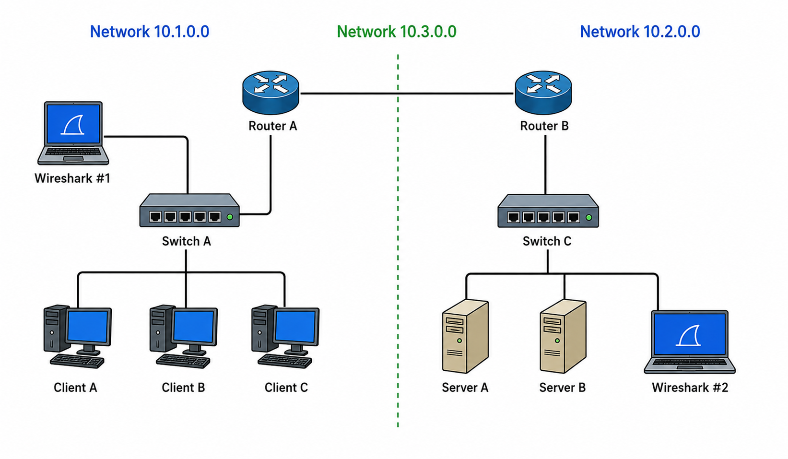
📷Figure 72 — open trace file to view
Figure 72. consists of two networks (10.1.0.0 and 10.2.0.0 and 10.3.0.0, subnetted 255.255.0.0). Traffic between the clients and servers on network 10.1.0.0 will not be visible to Wireshark #2 on netwo
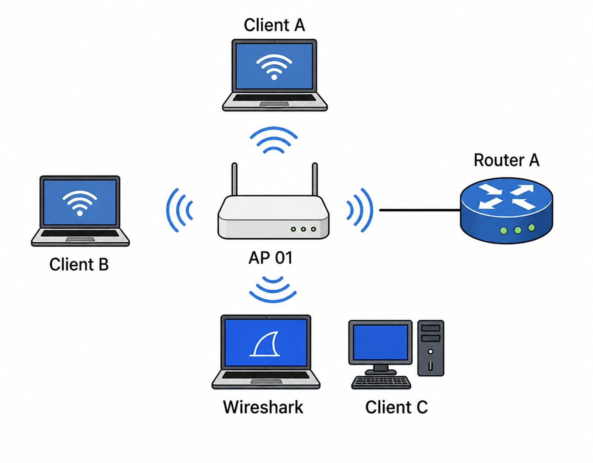
📷Figure 73 — open trace file to view
Figure 73. shows a portion of a network where a user, Client C, is complaining of performance problems. We have placed Wireshark close to that user.
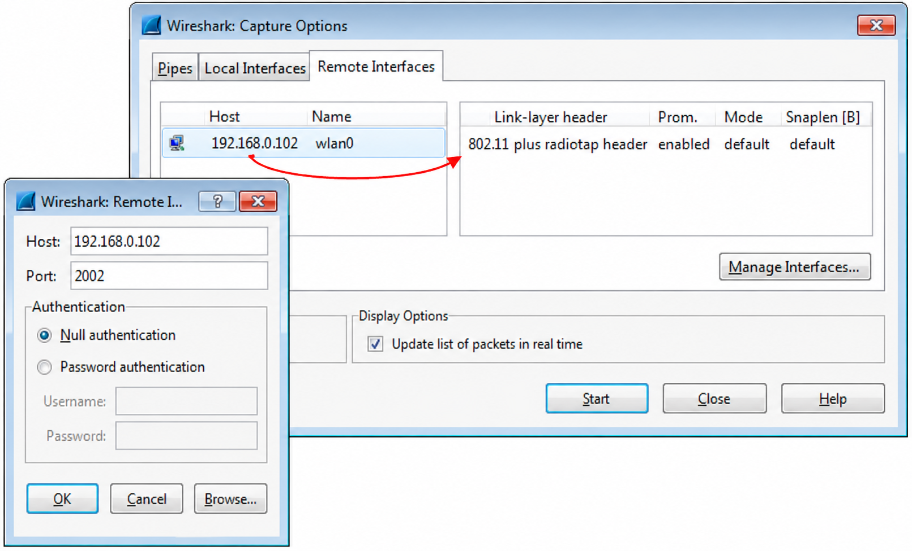
📷Figure 77 — open trace file to view
Figure 77. Performing remote capture using rpcapd
📷Figure 78 — open trace file to view
Figure 78. The Wireshark host is not listed in the file on the system running rpcapd Remote Capture: Active and Passive Mode Configurations Configure the remote capture device to run in
Ask a Question
Add a Note
TL;DR — CHAPTER 3
Capturing effectively requires picking the right interface (watch the sparkline), configuring capture options (ring buffer for long captures, snap length for high-speed links), and positioning your capture point to see the right traffic. On switched networks, use a SPAN port or hardware tap. pcapng format preserves metadata. A non-zero Dropped count means your trace is incomplete.
Review Questions
Q3.1
What is the difference between promiscuous mode and monitor mode?
HINT
Think about which OSI layer each operates at and what traffic types each reveals.
ANSWER
Promiscuous mode (Layer 2/Ethernet) tells the NIC to pass all frames to the OS regardless of destination MAC — normally a NIC discards frames not addressed to it. It does not change what the switch sends to your port. Monitor mode is Wi-Fi specific: the adapter receives all 802.11 frames (management, control, data from all BSSIDs) without being associated to an AP. You need monitor mode for wireless analysis of other stations' traffic; promiscuous mode alone is not sufficient for Wi-Fi analysis of other clients.
Q3.2
Explain the purpose of a ring buffer in Wireshark and give a scenario where it is essential.
HINT
What happens when you must capture for hours but can't store infinite data?
ANSWER
A ring buffer creates rotating capture files — when the last file fills, Wireshark overwrites the first. Configure it with file size (e.g. 100 MB) and maximum file count (e.g. 50). Essential for long-term intermittent problem capture: you capture overnight and when the intermittent error occurs at 3 AM, the ring buffer files from the hour before and after the event are still available, even though the capture ran for 8 hours total.
Q3.3
You're on a switched network and can only see your own traffic. List two methods to capture another host's traffic and state one limitation of each.
HINT
What do each method require in terms of access (physical, administrative, software)?
ANSWER
(1) SPAN/mirror port: switch admin access required; may strip FCS errors; SPAN bandwidth is limited. (2) Network tap: physical access to the cable required; typically needs two capture interfaces for full-duplex; hardware cost. Also acceptable: hub insertion (creates collisions, limited to 100 Mbps) or ARP poisoning (requires authorization, risky in production).
Q3.4
What does a non-zero Dropped count in the Wireshark status bar indicate, and what are two ways to reduce drops?
HINT
Where does the drop occur — in hardware, the kernel, or Wireshark?
ANSWER
Drops occur in the OS kernel capture buffer — packets arrived faster than they could be processed and were discarded. The trace is incomplete. Fix: (1) increase the kernel buffer size in Capture Options (Buffer size field); (2) disable 'Update list of packets in real time' to stop Wireshark from spending CPU rendering each packet during capture; (3) use dumpcap — a lean headless capture tool without Wireshark's GUI overhead; (4) add a capture filter to reduce the incoming packet rate.